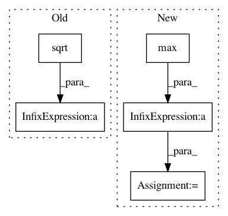

68963166e5fe4e23655279b653f7cc6ed6d0d0b3,dipy/reconst/mapmri.py,MapmriModel,fit,#MapmriModel#Any#,32
Before Change
"CVXOPT package needed to enforce constraints")
import cvxopt.solvers
// rmax is linear in mu with rmax \aprox 0.3 for mu = 1/(2*pi*sqrt(700))
rmax = 0.35 * mu.mean()* (2 * np.pi * np.sqrt(700))
rgrad = gen_rgrid(rmax = rmax, Nstep = 10)
K = mapmri_psi_matrix(self.radial_order, mu, rgrad, self.tau)
Q = cvxopt.matrix(np.dot(M.T,M)+ self.lambd * I)
After Change
raise ValueError(
"CVXOPT package needed to enforce constraints")
import cvxopt.solvers
rmax = 2* np.sqrt(10 * evals.max()*self.tau)
r_index, r_grad = create_rspace(11, rmax)
K = mapmri_psi_matrix(self.radial_order, mu, r_grad[0:len(r_grad)/2,:], self.tau)
Q = cvxopt.matrix(np.dot(M.T,M)+ self.lambd * I)
p = cvxopt.matrix(-1*np.dot(M.T,data))
In pattern: SUPERPATTERN
Frequency: 3
Non-data size: 5
Instances
Project Name: nipy/dipy
Commit Name: 68963166e5fe4e23655279b653f7cc6ed6d0d0b3
Time: 2015-09-14
Author: mauro.zucchelli88@gmail.com
File Name: dipy/reconst/mapmri.py
Class Name: MapmriModel
Method Name: fit
Project Name: glm-tools/pyglmnet
Commit Name: fb4b9023f9ec516648d58b4ba2ecd8e241e21618
Time: 2016-11-16
Author: pavan.ramkumar@gmail.com
File Name: pyglmnet/utils.py
Class Name:
Method Name: tikhonov_from_prior
Project Name: nipy/dipy
Commit Name: 70ae11c05da20cb3e1e7d6a9209dcf7d244acc57
Time: 2010-03-11
Author: matthew.brett@gmail.com
File Name: dipy/io/dwiparams.py
Class Name:
Method Name: B2q